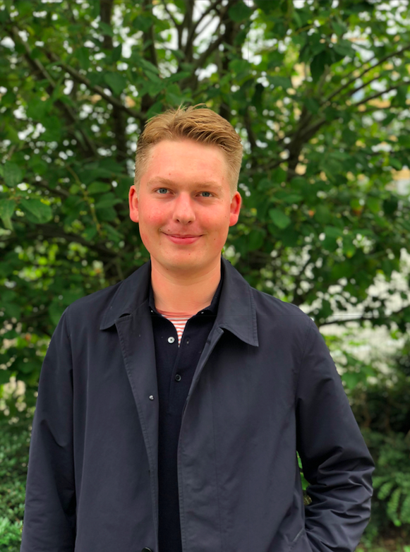

Om mig
Jeg hedder Kian, jeg er 25 år gammel og bor i Nordvest. Jeg startede på Multimediedesigner uddannelsen pga. jeg gerne vil lære mere om hjemmeside programmering og brugerflader. Da jeg er igang med opstart af firma, som er baseret på en web-shop, vil jeg kunne gøre brug af mine færdigheder sideløbende . Mine styrker ligger mest i design og kommunikation. Jeg glæder mig derfor til at gå mere i dybden med det mere tekniske.

